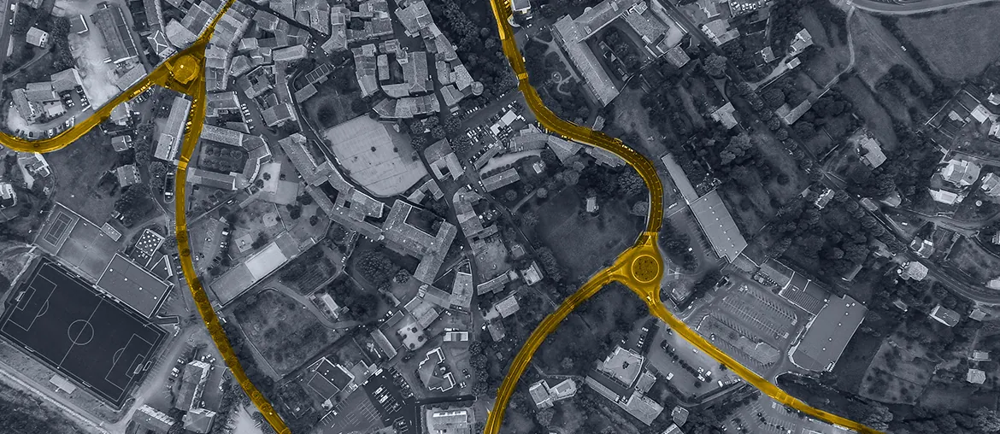

Portal flow map
Turn Kundportal booking, invoices, disruption history, and contractor access into one testable service map with clear owners.
Prepared for Teracom Samhallsnat
Teracom is adding more software around secure networks. This brief focuses on the customer portal, authorized mobile flows, and cloud tools that support critical work.
We saw Teracom hiring for a Full Stack Engineer and IT service leadership in Nätteknologi. That points to active digital delivery, not only steady network operations.
The hiring signal says Teracom is scaling the software layer around secure communication. Kundportal already covers site booking, invoices, planned work, disruptions, mobile subscriptions, and contractor access. Digitala tjänster adds cloud services and TAK based shared situation views, which raises delivery load. The bottleneck is keeping product work, security review, and field needs moving together. If that slows, critical users wait longer for useful tools while network specialists carry software questions.
Map Kundportal paths for site booking, disruption updates, and contractor access into one support-flow backlog. That shows where a full-stack hire needs help first.
Give FALKEN and TAK one shared release checklist. Both depend on authorized identity, controlled information flow, and fast recovery if a release fails.
Use a dedicated squad under Teracom's PO/PM for a six-week pilot, with a weekly demo and one clear handover package.
Turn Kundportal booking, invoices, disruption history, and contractor access into one testable service map with clear owners.
Set a shared checklist for FALKEN, TAK, and portal changes, including identity, logging, and rollback checks.
Build or harden one thin API path between customer tools and service data, with QA from day one.
Leave runbooks, automated checks, and a backlog that Nätteknologi can use after the pilot ends.
Elinext is a full-cycle software development company, active since 1997, with about 700 in-house specialists and no freelancers. We can add full-stack, DevOps, QA, AI/ML, and cloud engineers under your own Product Owner. We hold ISO 9001 and ISO 27001, which matters when software supports secure communication. Our delivery history includes major industrial and technology clients. The same model gives Teracom added speed without pulling network experts away from critical operations.

React and Java work for telecom planning.
View case study
Web, mobile, and DevOps for provider operations.
View case study